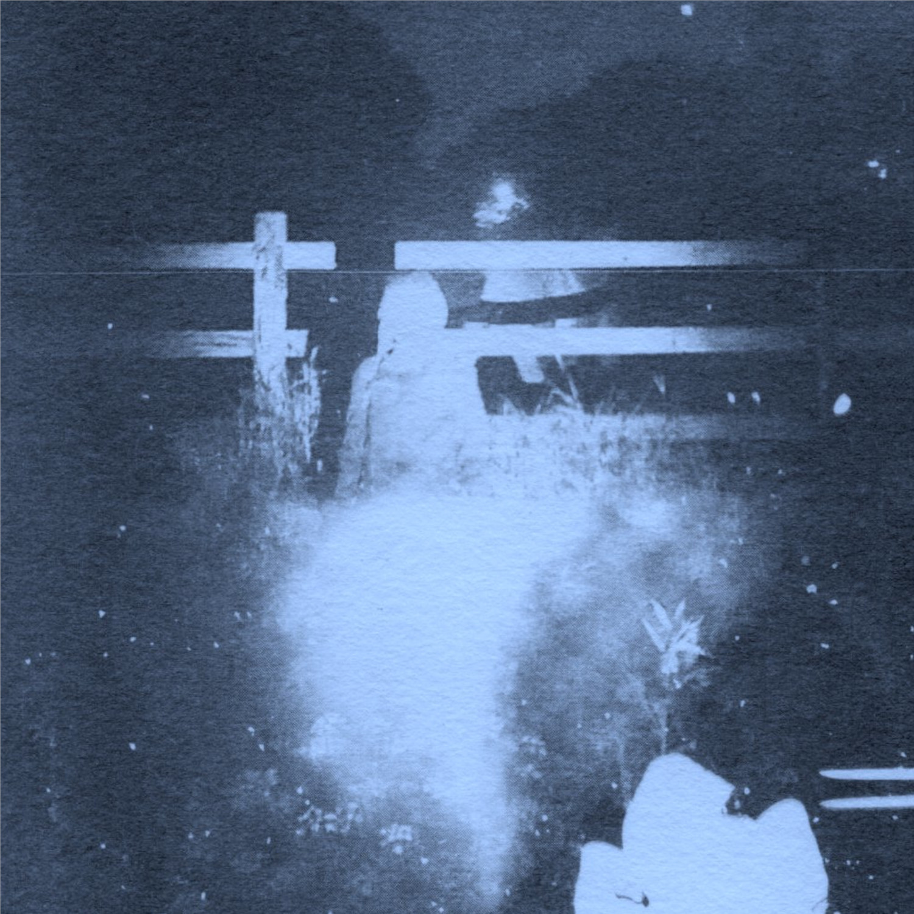

DIAN
Glamour, Grammar, Grimoire
“There is no recipe. Each poem requires its own approach. No translation is definitive.” Rosmarie Waldrop (Translating the Sound in Poetry: Six Propositions)
In Tarot, a three card spread can represent the past, the present and the future. The cards in Tarot do not predict what will happen, but rather provide a tool for reflection. DIAN’s Glamour, Grammar, Grimoire seems to offer a similar experience, as the album unfolds full of hidden messages, symbolism and incantations that are open to interpretation by the listener. The number three returns in the album’s title: three sister words whose meanings are intertwined. A grimoire is a manual for invoking demons, containing spells, rituals and instructions for manufacturing magical tools. Its name is thought to be derived from the French grammaire (“incantation, grammar”). The word glamour can be traced back to the Scottish glamer, meaning magic or enchantment. This in turn is a variant of gramarye - an alteration of the English grammar as scholarship, especially occult learning. Of course, there is also a form of magic to be found in grammar itself as language can cast spells, tell stories, and enchant us. DIAN’s album beckons us in a dark, murky and shimmery world that simultaneously serves as a crooked mirror and allows for a reflection of our present situation.
About the artist:
DIAN started as a sound research two years ago with a project about interviewing objects, and moved on to translating the voices of things into a non-verbal and synthetic palette of sounds. Objects (a fan, a river, a noun in plural, vapor, veins and barrels) are evoked, their presence is emulated or fabricated. We can sometimes hear their polyphonic monologues. Apart from mimesis and reiteration, the music also plays with the idea of scale, by transposing it to an acoustic environment. A rustling glossolalia, a trompe l’oreille. Credits:
All music by Diana Duta Additional mixing by Diana Duta & Denis Wouters Mastering by Denis Wouters Cover photograph by Roger Fähndrich Layout by Joachim Bovin Recorded at Trust Collective, Barril de Alva, Portugal in April 2024
Released on 17-11-2024 on limited edition C60 Cassette Tape & Digital
Thank you: Tereza, John, Roger, Denis & Joachim
Glamour, Grammar, Grimoire will be released with a limited edition game of cards that serves as a companion piece to the album.
